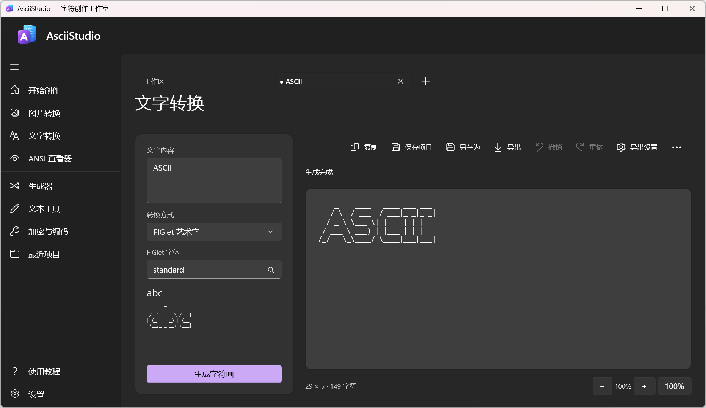

图片转彩色 ANSI
调整字符集、颜色和抖动方式，比较原图与转换结果。半块双色模式用字符的上下两部分呈现颜色。
原图转换结果

AsciiStudio 是 Windows 上的 ASCII / ANSI 创作工具。导入图片或输入文字，调整转换效果，再编辑、保存和导出作品。
适用于 Windows x64，当前为 0.9 预发布阶段。

同一张图片可以转换为带颜色的字符画，文字也可以排成标题或图案。
调整字符集、颜色和抖动方式，比较原图与转换结果。半块双色模式用字符的上下两部分呈现颜色。
选择字体，调整字距、行距和对齐方式，为文字加上边框。中文可以使用系统字体模式。

这些样例由应用使用的转换与导出代码生成。查看样例生成说明
打开或粘贴图片，调整尺寸、比例、亮度、对比度与字符集。支持 Braille、半块双色和多种抖动方式，也可以处理透明边缘。
支持 PNG、JPEG、BMP、TIFF，以及 GIF 的第一帧。
使用 FIGlet 或系统字体生成字符画，调整换行、对齐与间距。字体库支持搜索、收藏和导入，标题可以加上边框。
中文请使用系统字体模式；FIGlet 模式接受 ASCII 输入。
打开 ANSI 文件或粘贴转义序列，查看带颜色的字符作品，并读取常见编码和 SAUCE 信息。
切换原图与结果，使用并排视图或拖动分界线比较。编辑字符画时可以撤销和重做；手工修改后，可选择更新结果或保留独立版本。
将作品保存为 .asciiproj 项目，重新打开时恢复创作来源，继续调整。
导出文本、图片或网页格式，用于终端展示、文档和网页。
TXT、PNG、JPEG、静态 GIF、HTML、SVG、ANSI、JSON、Markdown。
应用还提供边框与图案生成、文本整理、代码注释，以及本地加密和编码工具。
选择图片来源，或输入想要生成的文字。
尝试不同字符集、字体和颜色，比较原图与结果，再编辑需要修改的部分。
保留创作来源，方便下次继续调整。
根据用途选择文本、图片、ANSI 或网页格式。

下载便携版 ZIP，完整解压后运行 AsciiStudio.exe。
Windows x64，最低目标为 Windows 10 1809。使用便携版无需安装开发 SDK。
当前为 0.9 预发布阶段，仍在进行稳定性与交付检查。各版本的变化见 Release 更新说明。
下载按钮将在新标签页打开 GitHub Releases，请在该页面选择下载文件。
图片、文字的转换与导出都在本机完成，可离线使用。下载应用需要联网访问 GitHub。
应用在本机处理图片和作品，保存项目与导出文件也在本机完成。
可以，请使用系统字体模式。FIGlet 模式接受 ASCII 输入。字符的实际显示效果可能因字体或终端而不同。
目前导入 GIF 只读取第一帧，导出的 GIF 也是静态图。动画、视频、摄像头和 3D 功能不在当前 0.9 开发范围内。
保存为 .asciiproj 项目。项目会保留创作来源，重新打开后可以继续调整；导出则用于生成需要的作品文件。
无需安装开发 SDK。下载 Windows x64 ZIP 并完整解压后，运行 AsciiStudio.exe 即可。